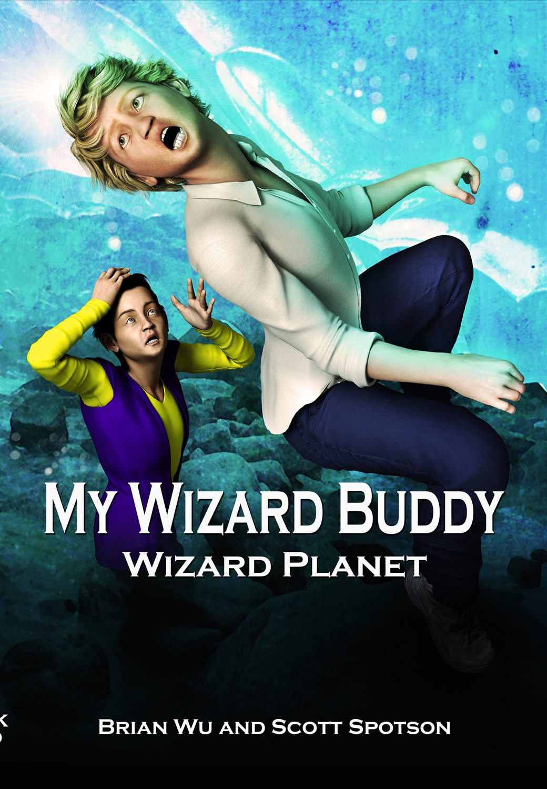
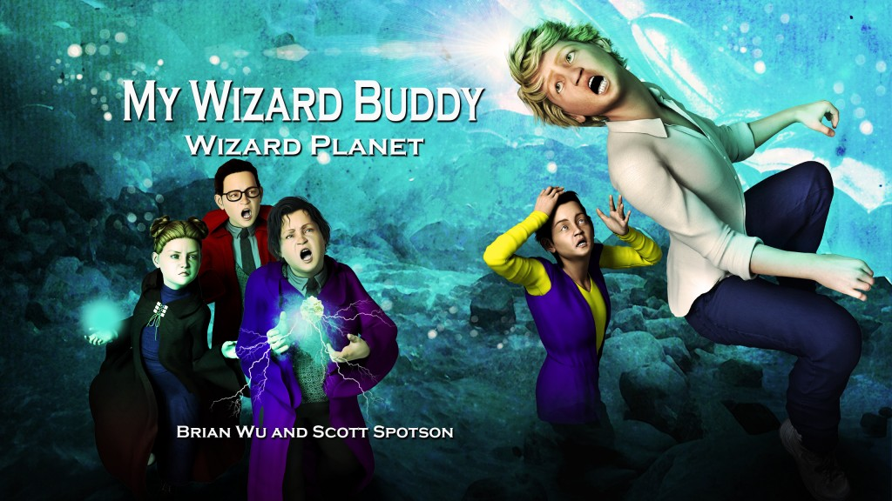

Inside the story


Tyler's wizard buddy, Dirk, has often driven Tyler to distraction even as he amicably conjured feats of incredible magic to help Tyler out of tight spots. Now, both boys are 12 years old, and Dirk has invited Tyler to visit his own wizard planet, called Adgiligda. Tyler hesitates before accepting, but when he does, it's one giant adventure after the other when Tyler joins in eye-popping games of wizardry and tangles with fearsome magical beasts!.